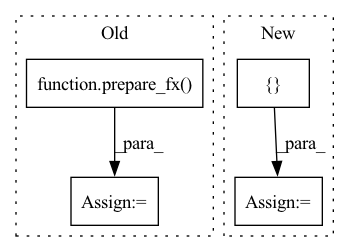

Pattern ID :18812
Before Change
test_only_eval_fn(model, self.img_data_2d)
non_inplace_model = convert_fx(prepared, inplace=True)
prepared = prepare_fx(
model, qconfig_dict, inplace=True)
test_only_eval_fn(model, self.img_data_2d)
inplace_model = convert_fx(prepared, inplace=True)
non_inplace_res = non_inplace_model(self.img_data_2d[0][0])After Change
model = symbolic_trace(M().eval())
qconfig_dict = {"": default_qconfig}
non_inplace_model = quantize_static_fx(
model, qconfig_dict, test_only_eval_fn, [ self.img_data_2dIn pattern: SUPERPATTERN
Frequency: 3
Non-data size: 4
Instances Fragment ID: 61099670
Project Name: pytorch/pytorch
Commit Name: c36b35407270b7ba803dc475d333ca0ee4c8c0c8
Time: 2020-10-01
Author: mruberry@fb.com
File Name: test/quantization/test_quantize_fx.py
M Class Name: TestQuantizeFx
N Class Name: TestQuantizeFx
M Method Name: test_inplace_option(1)
N Method Name: test_inplace_option(1)
M Parent Class: QuantizationTestCase
N Parent Class: QuantizationTestCase
M File Name: test/quantization/test_quantize_fx.py
N File Name: test/quantization/test_quantize_fx.py
M Start Line: 291
M End Line: 302
N Start Line: 296
N End Line: 302
Before Change
"custom_module_class":
[(CustomModule, ObservedCustomModule, QuantizedCustomModule)]}
// check prepared model
m = prepare_fx( original_m, qconfig_dict)
// calibration
m(data)
// all activation observers are inserted in the top level module
count_check = {
ns.call_module(torch.quantization.MinMaxObserver): 3
}
self.checkGraphModuleNodes(m, expected_node_occurrence=count_check)
// check converted/quantized model
m = convert_fx(m)
count_check = {
ns.call_function(torch.quantize_per_tensor) : 1,
ns.call_module(nnq.Conv2d) : 1,After Change
CustomModule: ObservedCustomModule
}
}
convert_custom_config_dict = {
"observed_to_quantized_custom_module_class": {
ObservedCustomModule: QuantizedCustomModule
}
}
// check prepared model
m = prepare_fx(
original_m,
qconfig_dict, Fragment ID: 61099676
Project Name: pytorch/pytorch
Commit Name: 49903a5cd5dc39b44466b7fa78dfa5a29e21a038
Time: 2020-10-14
Author: jerryzh@fb.com
File Name: test/quantization/test_quantize_fx.py
M Class Name: TestQuantizeFx
N Class Name: TestQuantizeFx
M Method Name: test_custom_module_class(1)
N Method Name: test_custom_module_class(1)
M Parent Class: QuantizationTestCase
N Parent Class: QuantizationTestCase
M File Name: test/quantization/test_quantize_fx.py
N File Name: test/quantization/test_quantize_fx.py
M Start Line: 710
M End Line: 734
N Start Line: 710
N End Line: 748
Before Change
m = torch.fx.GraphModule(original_m, CustomTracer().trace(original_m))
qconfig_dict = {"": default_qconfig}
// check prepared model
m = prepare_fx( m, qconfig_dict)
// calibration
m(data)
// all activation observers are inserted in the top level module
count_check = {After Change
// TODO: add other quant types after mixed mode support
for quant_type in [QuantType.STATIC]:
qconfig_dict = {
"": default_qconfig,
"custom_module_class":
[(CustomModule, ObservedCustomModule, QuantizedCustomModule)]}
// check prepared model
m = prepare_fx(original_m, qconfig_dict)
// calibration
m(data)
// all activation observers are inserted in the top level module Fragment ID: 61099672
Project Name: pytorch/pytorch
Commit Name: 7f6a1b2bd5eca2d25c70afe233f8b6878fec241d
Time: 2020-10-12
Author: jerryzh@fb.com
File Name: test/quantization/test_quantize_fx.py
M Class Name: TestQuantizeFx
N Class Name: TestQuantizeFx
M Method Name: test_custom_module_class(1)
N Method Name: test_custom_module_class(1)
M Parent Class: QuantizationTestCase
N Parent Class: QuantizationTestCase
M File Name: test/quantization/test_quantize_fx.py
N File Name: test/quantization/test_quantize_fx.py
M Start Line: 711
M End Line: 737
N Start Line: 708
N End Line: 722